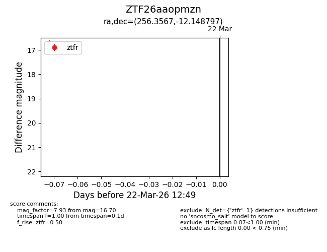
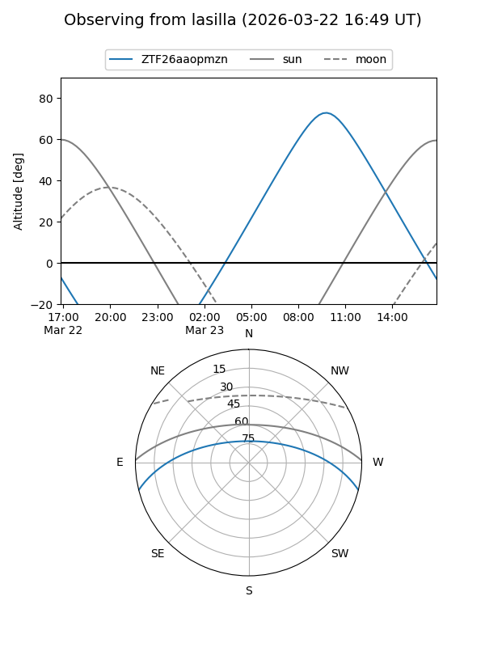
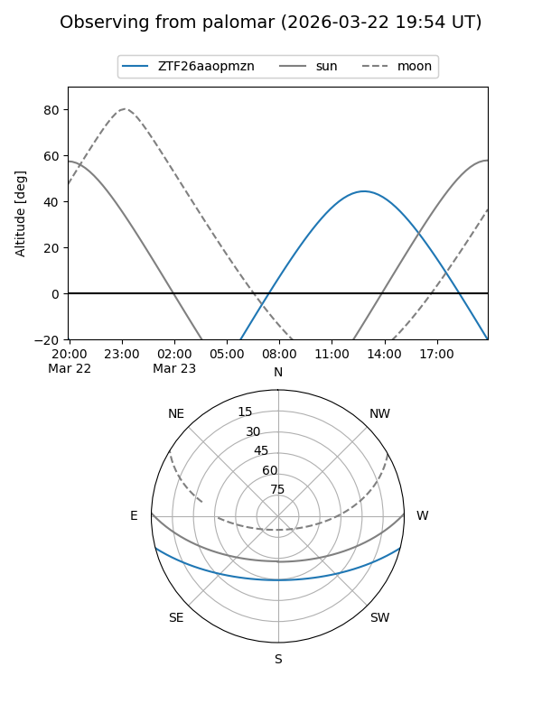

ZTF26aaopmzn
Target ZTF26aaopmzn at 2026-03-22 12:52
Aliases and brokers:
FINK: link
Lasair: link
ALeRCE: link
alt names
ZTF26aaopmzn (ztf,fink_ztf)
Coordinates:
equatorial (ra, dec) = 256.3567,-12.14880
equatorial (HMS+DMS) = 17:05:25.60,-12:08:55.67
galactic (l, b) = (9.1124,+16.99527)
Flags:
Photometry:
last ztfr=16.70
1 ztfr detections
Lightcurve

Visibility


Additional plots